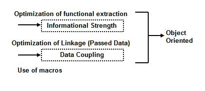

| Guideline: Decomposing Modules |
 |
|
Composite/Structured Design "Structured Design" is a software structure design technique proposed by L. L. Constantine, G. J. Myers, and W. P. Stevens (IBMers). It focuses on such techniques as data flow design, optimization of modularity, and structured charts. This idea was later systematized as "Composite Design" by Myers and adopted in the Improved Programming Technologies (IPT) of IBM as a module decomposition technique. Composite design mainly addresses following points:
Conditions for Creating Programs with a Long System Life The purpose of composite/structured design is to improve the reliability, maintainability, expandability, and generality of systems and programs and modules, and to create high quality programs with a long system life.
Separation of core application logic from other functions The core application logic is less than 30% of total logic (logically).
Documents (deliverables) work sequence, and description contents Reusable code and program parts  |
| © Copyright IBM Corp. 1987, 2012 All Rights Reserved Property of IBM These materials are intended only for use as part of an IBM engagement |